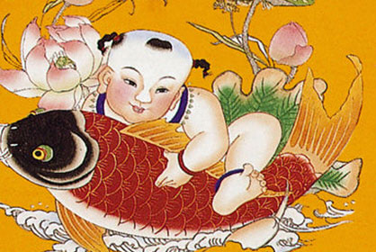

中
国的传统节日形式多样，内容丰富，是我们中华民族悠久的历史文化的一个组成部分。传统节日的形成过程，是一个民族或国家的历史文化长期积淀凝聚的过程，下面列举的这些节日，无一不是从远古发展过来的，从这些流传至今的节日风俗里，还可以清晰地看到古代人民社会生活的精彩画面。
春节是我国一个古老的节日，也是全年最重要的一个节日，如何过庆贺这个节日，在千百年的历史发展中，形成了一些较为固定的风俗习惯，有许多还相传至今。扫尘：“腊月二十四，掸尘扫房子”。贴春联：每逢春节，无论城市还是农村，家家户户都要精选一幅大红春联贴于门上，为节日增加喜庆气氛。贴窗花和倒贴“福”字：在民间人们还喜欢在窗户上贴上各种剪纸——窗花。窗花不仅烘托了喜庆的节日气氛，也集装饰性、欣赏性和实用性于一体。剪纸在我国是一种很普及的民间艺术，千百年来深受人们的喜爱，因它大多是贴在窗户上的，所以也被称其为“窗花”。在贴春联的同时，一些人家要在屋门上、墙壁上、门楣上贴上大大小小的“福”字。守岁：除夕守岁是最重要的年俗活动之一，守岁之俗由来已久。拜年：新年的初一，人们都早早起来，穿上最漂亮的衣服，打扮得整整齐齐，出门去走亲访友，相互拜年，恭祝来年大吉大利。拜年的方式多种多样，有的是同族长带领若干人挨家挨户地拜年；有的是同事相邀几个人去拜年。
清明是我国的二十四节气之一。由于二十四节气比较客观地反映了一年四季气温、降雨、物候等方面的变化，所以古代劳动人民用它安排农事活动。《淮南子?天文训》云:“春分后十五日，斗指乙，则清明风至。”按《岁时百问》的说法：“万物生长此时，皆清洁而明净。故谓之清明。”清明一到，气温升高，雨量增多，正是春耕春种的大好时节。故有“清明前后，点瓜种豆”、“植树造林，莫过清明”的农谚。可见这个节气与农业生产有着密切的关系。清明节是我国传统节日，也是最重要的祭祀节日，是祭祖和扫墓的日子。扫墓俗称上坟，祭祀死者的一种活动。汉族和一些少数民族大多都是在清明节扫墓。清明节，英文标准译名：Tomb-sweeping Day或者Pure Brightness。是中国的二十四节气之一，每年的阳历四月五日。（此节日现已列入国假3天）。由于二十四节气比较客观地反映了一年四季气温、降雨、物候等方面的变化，所以古代劳动杜牧的《清明》人民用它安排进行农事活动。《淮南子·天文训》云：“春分后十五日，斗指乙，则清明风至。”按《岁时百问》的说法：“万物生长此时，皆清洁而明净。故谓之清明。”清明一到，气温升高，雨量增多，正是春耕春种的大好时节。故有“清明前后，种瓜点豆”、“植树造林，莫过清明”的农谚。可见这个节气与农业生产有着密切的关系。s
每年农历八月十五日，是传统的中秋佳节。这时是一年秋季的中期，所以被称为中秋。在中国的农历里，一年分为四季，每季又分为孟、仲、季三个部分，因而中秋也称仲秋。八月十五的月亮比其他几个月的满月更圆，更明亮，所以又叫做“月夕”，“八月节”。此夜，人们仰望天空如玉如盘的朗朗明月，自然会期盼家人团聚。远在他乡的游子，也借此寄托自己对故乡和亲人的思念之情。所以，中秋又称“团圆节”。因中秋节的主要活动都是围绕“月”进行的，所以又俗称“月节”、“月夕”、“追月节”、“玩月节”、“拜月节”；在唐朝，中秋节还被称为“端正月”。中秋节的盛行始于宋朝，至明清时，已与元旦齐名，成为我国的主要节日之一。关于中秋节的起源，大致有三种：起源于古代对月的崇拜、月下歌舞觅偶的习俗，古代秋报拜土地神的遗俗。为传承民族文化，增强民族凝聚力， 中秋节从2008年起被国务院列为国家法定节假日。国家非常重视非物质文化遗产的保护，2006年5月20日，该节日经国务院批准列入第一批国家级非物质文化遗产名录。
农历九月九日，为传统的重阳节。因为古老的《易经》中把“六”定为阴数，把“九”定为阳数，九月九日，日月并阳，两九相重，故而叫重阳，也叫重九，古人认为是个值得庆贺的吉利日子，并且从很早就开始过此节日。九九重阳，因为与“久久”同音，九在数字中又是最大数，有长久长寿的含意，况且秋季也是一年收获的黄金季节，重阳佳节，寓意深远，人们对此节历来有着特殊的感情，唐诗宋词中有不少贺重阳，咏菊花的诗词佳作。在1989年，我国把每年的九月九日定为老人节。“重阳节”名称见于记载却在三国时代。据曹丕《九日与钟繇书》中载：“岁往月来，忽复九月九日。九为阳数，而日月并应，俗嘉其名，以为宜于长久，故以享宴高会。”到了魏晋时期有了赏菊、饮酒的习俗，这在陶渊明的作品中有所体现。 唐朝时，重阳节才被定为正式节日。从此以后，宫廷、民间一起庆祝重阳节，并且在节日期间进行各种各样的活动。到了明代，九月重阳，皇宫上下要一起吃花糕庆祝，皇帝要亲自到万岁山登高，以畅秋志。到了清代，这种风俗依旧盛行。
每年农历的正月十五日，春节刚过，迎来的就是中国的传统节日--元宵节。 正月是农历的元月，古人称夜为“宵”，所以称正月十五为元宵节。正月十五日是一年中第一个月圆之夜，也是一元复始，大地回春的夜晚，人们对此加以庆祝，也是庆贺新春的延续。元宵节又称为“上元节”。 按中国民间的传统，在这天上皓月高悬的夜晚，人们要点起彩灯万盏，以示庆贺。出门赏月、燃灯放焰、喜猜灯谜、共吃元宵，合家团聚、同庆佳节，其乐融融。 元宵节也称灯节，元宵燃灯的风俗起自汉朝，到了唐代，赏灯活动更加兴盛，皇宫里、街道上处处挂灯，还要建立高大的灯轮、灯楼和灯树，唐朝大诗人卢照邻曾在《十五夜观灯》中这样描述元宵节燃灯的盛况“接汉疑星落，依楼似月悬。”
农历五月初五，是中国民间的传统节日——端午节，它是中华民族古老的传统节日之一。端午也称端五，端阳。过端午节，各地有着不尽相同的习俗，如给小孩涂雄黄，饮用雄黄酒、菖蒲酒，吃五毒饼、咸蛋、粽子和时令鲜果等，除了有迷信色彩的活动渐已消失外，其余至今流传中国各地及邻近诸国。有些活动，如赛龙舟等，已得到新的发展，突破了时间、地域界线，成为了国际性的体育赛事。纪念屈原 此说最早出自南朝梁代吴均《续齐谐记》和南朝宗懔《荆楚岁时记》。据说，屈原投汨罗江后，当地百姓闻讯马上划船捞救，一直行至洞庭湖，始终不见屈原的尸体。那时，恰逢雨天，湖面上的小舟一起汇集在岸边的亭子旁。当人们得知是为了打捞贤臣屈大夫时，再次冒雨出动，争相划进茫茫的洞庭湖。为了寄托哀思，人们荡舟江河之上，此后才逐渐发展成为龙舟竞赛。百姓们又怕江河里的鱼吃掉他的身体，就纷纷回家拿来米团投入江中，以免鱼虾糟蹋屈原的尸体，后来就成了吃粽子的习俗。看来，端午节吃粽子、赛龙舟与纪念屈原相关，有唐代文秀《端午》诗为证：“节分端午自谁言，万古传闻为屈原。堪笑楚江空渺渺，不能洗得直臣冤。”